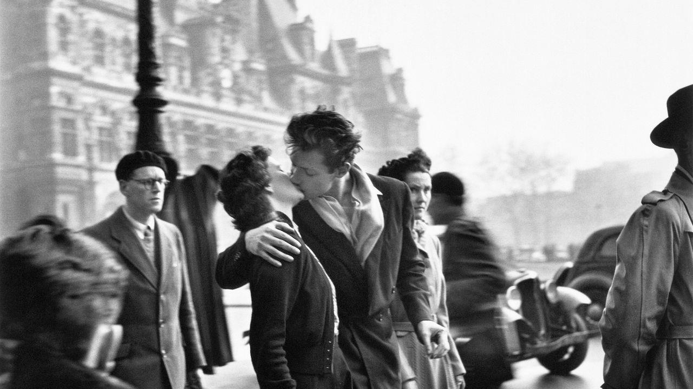
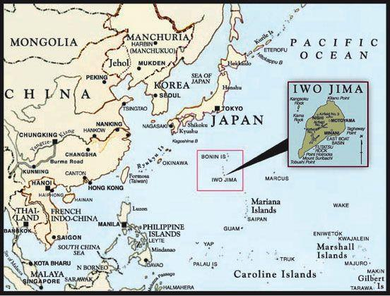
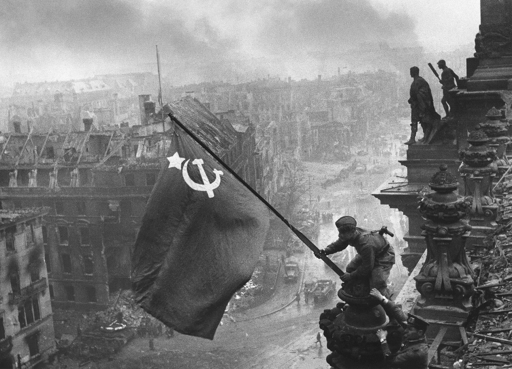
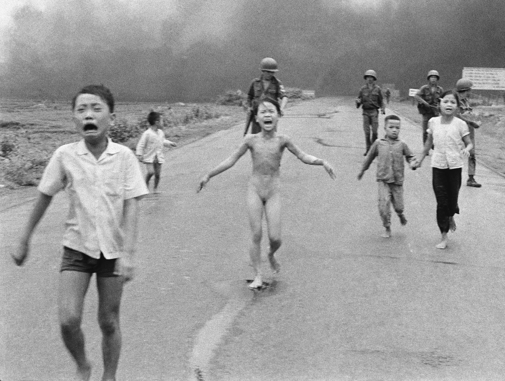
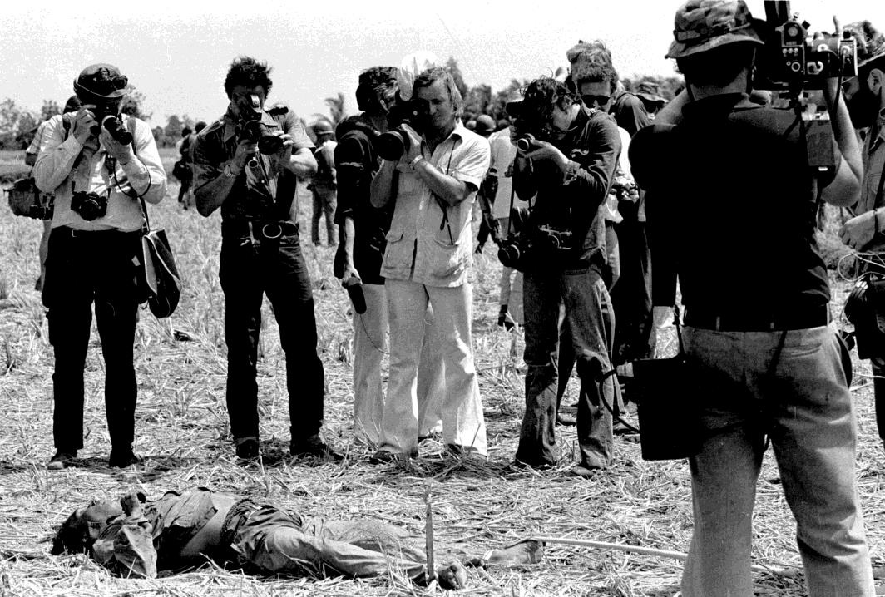
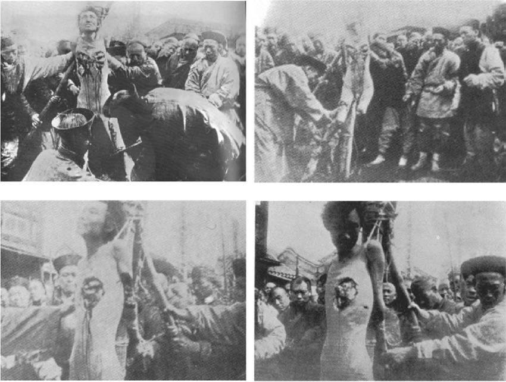

Timothy O'Sullivan / Alexander Gardner，〈狙擊叛兵之家〉（Home of a Rebel Sharpshooter），蓋茨堡（Gettysburg），1863
屍體被搬動過
〈狙擊叛兵之家〉，1863
「不過最起碼，那些人骨是故有的。我們如今知道，布雷迪（Mathew Brady）的攝影隊曾搬動過蓋茨堡那些陣亡不久的軍士屍首，然後重新擺放。那幀名為〈狙擊叛兵之家：蓋茨堡〉（The Home of a Rebel Sharpshooter, Gettysburg）的照片，其實是把喪命戰場的一名南軍士兵的屍體搬到圖中這個較上照的位置──由兩堵如牆巨石及一堆碎石壁壘所構成的小穴。嘉德納（Alexander Gardner）還把一枝步槍倚於屍旁的壁壘上。（這槍不像狙擊兵用的特殊步槍，而是一般兵士用的。嘉德納若不是矇然不覺，就是他並不在乎。）奇怪的倒不是有這麼多過去的經典新聞照──包括一些二次大戰期間最難忘的影像──竟然含有『導演』的成分。奇怪的是，我們竟會因而詫異，又深覺失望。」Sontag，《旁觀他人之痛苦》

Robert Doisneau，〈市政廳前的吻〉（Le Baiser de l'Hôtel de Ville），巴黎（Paris），1950
硫磺島（Iwo Jima），1945
Joe Rosenthal，〈在硫磺島升起國旗〉（Raising the Flag on Iwo Jima），1945 年 2 月 23 日

硫磺島位於東京以南約 1200 公里

Yevgeny Khaldei（?），〈在國會大廈升起旗幟〉（Raising a Flag over the Reichstag），柏林（Berlin），1945
〈戰爭的恐怖〉，1972

Nick Ut（?），〈戰爭的恐怖〉（The Terror of War），越南（Vietnam），1972

鏡頭後面：攝影記者
Burke：他人痛苦中的欣喜

1905 年北京的凌遲照片，Sontag 在第六章談到 Georges Bataille 收藏的這組照片。
Edmund Burke observed that people like to look at images of suffering. "I am convinced we have a degree of delight, and that no small one, in the real misfortunes and pains of others," he wrote in A Philosophical Enquiry into the Origins of Our Ideas of the Sublime and Beautiful (1757). "There is no spectacle we so eagerly pursue, as that of some uncommon and grievous calamity."
「在文化剛萌芽之際，坦承人有天生的暴戾傾向也許不那麼難。在《關於我們的美與雄渾意念之來源的哲學探討》（A Philosophical Enquiry into the Origin of Our Ideas of the Sublime & Beautiful, 1757）一書中，艾德蒙・柏克（Edmund Burke）曾說：『我深信，面對真正的災禍和他人的痛苦時，我們會有某種程度的欣喜，而且不只一點點……我們最熱切的追尋，正是旁觀異乎尋常的、淒慘的禍害。』」
And it is not necessarily better to be moved. Sentimentality, notoriously, is entirely compatible with a taste for brutality and worse. (Recall the canonical example of the Auschwitz commandant returning home in the evening, embracing his wife and children, and sitting at the piano to play some Schubert before dinner.) People don't become inured to what they are shown—if that's the right way to describe what happens—because of the quantity of images dumped on them. It is passivity that dulls feeling.
Sontag，《旁觀他人之痛苦》，第六章
憐憫宣告了我們的無辜
《旁觀他人之痛苦》
The imaginary proximity to the suffering inflicted on others that is granted by images suggests a link between the faraway sufferers—seen close-up on the television screen—and the privileged viewer that is simply untrue, that is yet one more mystification of our real relations to power. So far as we feel sympathy, we feel we are not accomplices to what caused the suffering. Our sympathy proclaims our innocence as well as our impotence.
To that extent, it can be (for all our good intentions) an impertinent—if not an inappropriate—response. To set aside the sympathy we extend to others beset by war and murderous politics for a reflection on how our privileges are located on the same map as their suffering, and may—in ways we might prefer not to imagine—be linked to their suffering, as the wealth of some may imply the destitution of others, is a task for which the painful, stirring images supply only an initial spark.